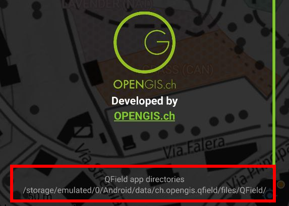

Gestión de almacenamiento de QField¶
En la pantalla de inicio de QField, a los usuarios se les presentan dos opciones para abrir un proyecto.
- Proyectos de QFieldCloud: La primera opción es acceder a un proyecto almacenado en QFieldCloud En el siguiente capítulo se explica cómo configurar y trabajar con QFieldCloud.
- Abrir archivo local: La segunda opción implica copiar una copia de trabajo del archivo del proyecto QGIS desde una computadora portátil o PC (el dispositivo de origen) al teléfono o tableta (el dispositivo de destino). En el dispositivo de destino, los usuarios pueden acceder y editar esta copia local mediante QField y eventualmente copiar la versión editada al escritorio o a un servicio de almacenamiento en la nube alternativo.
Existen varias posibilidades para exportar copias de archivos de proyecto y conjuntos de datos desde el dispositivo de origen que ejecuta QGIS e importarlas a un dispositivo de destino para la recopilación de datos de campo. A continuación, se incluyen instrucciones específicas del sistema operativo sobre cómo acceder a proyectos y conjuntos de datos individuales a través de QField.
1. Exportación de archivos de proyecto de QGIS para su uso en QField¶
QField admite una amplia gama de formatos de datos. Hay dos maneras de preparar y copiar un proyecto en QGIS para su uso en QField.
Almacenar archivos en una carpeta designada¶
Una forma de compilar todas las partes necesarias de un proyecto de QGIS es almacenarlas en una carpeta. Esta carpeta puede contener archivos individuales, como un
- Archivo de proyecto QGIS (.qgs o .qgz)
- Datos vectoriales (shapefiles, GeoJSON o Geopackage)
- Datos ráster (GeoTIFFs, JPEGS y otros)
- Archivos auxiliares, que incluyen archivos adicionales utilizados para diseñar (.qml o .sld) y cualquier otro archivo al que haga referencia el proyecto
Empaquetar el proyecto como un GeoPackage¶
La forma más sencilla y eficiente de empaquetar un proyecto de QGIS y sus datos geoespaciales correspondientes en un solo archivo es usar GeoPackages. Recomendamos usar el formato de archivo GeoPackage para proyectos en QField, ya que empaquetar en QGIS es fácil y directo. Para empaquetar un proyecto como GeoPackage, se requieren tres pasos.
-
Empaquetar capas vectoriales como GeoPackage: Primero, haga clic en la caja de herramientas y busque la herramienta “empaquetar capas”. Esta herramienta le permite empaquetar capas vectoriales seleccionadas en el archivo del proyecto (y en otros lugares) en un único GeoPackage que contiene los datos geoespaciales.
-
Agregar capas raster a GeoPackage Si su proyecto contiene capas ráster, estas también se pueden almacenar en GeoPackage. Haga clic en la capa ráster que desea exportar, luego exportar > guardar como y seleccione GeoPackage como formato. Agregue un nombre de archivo y seleccione los tres puntos para buscar el GeoPackage. Seleccione el GeoPackage y cambie el formato de archivo en la parte inferior de la ventana de diálogo de “GeoTIFF” a “Todos los archivos (.)”. Ahora las capas vectoriales y ráster se guardan en el mismo GeoPackage. Para asegurarse, busque el GeoPackage en el panel del navegador y expándalo.
-
Agregar archivo de proyecto (.qgs) a GeoPackage: A continuación, vaya a Proyecto > Guardar en > GeoPackage y seleccione el archivo GeoPackage que contiene todas las capas. Esto también guarda el archivo del proyecto, con la extensión .qgs en el GeoPackage.
Para obtener más información, consulte la documentación de QGIS capas de empaquetado.
2. Copiar el proyecto al dispositivo de destino QField¶
Tanto en Android como en iOS, al instalar QField se crea una carpeta llamada QField, que contiene tres carpetas: Conjuntos de datos importados, Proyectos importados y QField.
Tras empaquetar el proyecto correctamente, la carpeta o el archivo que lo contiene debe copiarse al dispositivo de destino que ejecuta QField, concretamente a la carpeta Proyectos importados.
Esta carpeta se encuentra en las siguientes rutas:
- Ruta de Android:
Android/data/ch.opengis.qfield/files/Imported Projects - Ruta de iOS:
En mi iPhone/QField/Imported Projects
Copiar el proyecto empaquetado a la carpeta correspondiente de cada dispositivo se puede hacer de varias maneras.
Android¶
Transferencia mediante cable USB¶
Si desea usar un cable para importar el proyecto a su dispositivo, simplemente conecte ambos dispositivos mediante un cable USB y siga las instrucciones sobre [cómo transferir archivos entre su computadora y el dispositivo Android]. (https://support.google.com/android/answer/9064445?hl=en#zippy=%2Cwindows-computer)
En la mayoría de los dispositivos conectados a una computadora mediante una conexión de cable USB, la ruta será <drive>:/Android/data/ch.opengis.qfield/files/.
Allí, los usuarios encontrarán las carpetas Conjuntos de datos importados y Proyectos importados, donde se deben guardar los proyectos y conjuntos de datos de QGIS.
Los cambios realizados en el contenido del proyecto y los conjuntos de datos se guardan en los archivos que se encuentran en estas ubicaciones.
Envío por Bluetooth¶
La transferencia inalámbrica de archivos también es posible al compartir archivos a través de una conexión Bluetooth..](https://www.wikihow.com/Connect-Your-Android-Phone-to-a-Windows-PC-Using-Bluetooth#:~:text=Click%20the%20Windows%20Start%20menu,%22Yes%22%20on%20your%20computer.)
Google Drive (y otros servicios de almacenamiento en la nube)¶
La ventaja de usar Google Drive es que tanto el dispositivo de origen como el de destino comparten acceso a un directorio de trabajo central que contiene los archivos del proyecto actual. Un posible flujo de trabajo podría ser el siguiente:
- Preparar y empaquetar un proyecto QGIS en el dispositivo de origen
- Suba el proyecto a la nube (por ejemplo Google Drive)
- Descargue el proyecto en los dispositivos de destino y recopile datos
- Suba el proyecto modificado (o partes del proyecto) desde los dispositivos de destino a la nube y reemplace los archivos antiguos por los nuevos.
- Descargue el proyecto nuevamente en el dispositivo de origen
Nota
Al trabajar con Google Drive, puede ser útil crear una carpeta dedicada en la nube que contenga todos los proyectos. También se puede crear una carpeta paralela a esta carpeta en el dispositivo de destino, donde se podrán descargar y guardar los proyectos de QGIS.
iOS¶
Transferencia mediante cable USB¶
Transferir archivos de MacBooks o Macs a iPhone mediante un cable no es sencillo, ya que no es posible acceder a archivos individuales en el directorio QField. Una solución alternativa podría ser la siguiente:
- copie toda la carpeta
Proyectos importadosdesde su dispositivo iOS de destino a su dispositivo de origen - copie el archivo del proyecto QGIS empaquetado en la carpeta
Proyectos importadoscopiada - copie nuevamente y reemplace la antigua
Carpeta importadacon la nueva
iCloud (y otros servicios de almacenamiento en la nube)¶
Una forma eficiente de sincronizar proyectos es usar iCloud como espacio de trabajo compartido para descargar y subir archivos de proyecto.
No es posible importar proyectos desde carpetas dentro de la aplicación QField para iOS.
En su lugar, los nuevos archivos de proyecto deben guardarse en la carpeta Proyectos Importados para que QField pueda acceder a ellos.
Un posible flujo de trabajo podría ser el siguiente:
- En el dispositivo de origen, cargue el proyecto empaquetado en una carpeta en iCloud (titulada, por ejemplo, "Proyectos QField")
- En el dispositivo de destino, descargue el proyecto empaquetado y mueva el archivo a la carpeta QField
Proyectos importados - Abra el archivo del proyecto desde dentro de la aplicación QField y recopile datos
- Vuelva a cargar el archivo del proyecto a la carpeta compartida de iCloud y reemplace el archivo del proyecto anterior
- En el dispositivo de origen, descargue el nuevo archivo de proyecto que contiene los datos agregados y los cambios realizados
Compartir vía AirDrop¶
Una forma rápida y sencilla de intercambiar archivos es usar AirDrop.
El único requisito es que tanto el dispositivo de origen como el de destino tengan sistema operativo o iOS, respectivamente.
En el dispositivo de origen, haz clic derecho en el archivo y selecciona Compartir..., elige AirDrop y, a continuación, selecciona el dispositivo de destino.
En el dispositivo de destino, guarda el proyecto directamente en el directorio de QField Proyectos Importados.
Después de acceder y manipular los archivos del proyecto en QField, usa AirDrop en el dispositivo de destino para transferirlos de vuelta al dispositivo de origen.
3. Importación de proyectos y conjuntos de datos¶
Además de utilizar QFieldCloud, QField puede abrir proyectos y conjuntos de datos de cuatro maneras:

En Android, todas estas acciones están disponibles haciendo clic en el botón ‘importar (+)‘ ubicado en la esquina inferior derecha de la pantalla del selector de proyecto/conjunto de datos, al que se puede acceder haciendo clic en el botón ‘Abrir archivos locales‘ ubicado en la pantalla de bienvenida de QField.


En iOS, la única acción disponible a través del botón 'importar (+)' es importar desde una URL.
Importar una carpeta de proyecto (Android e iOS)¶
Android¶
Al importar un proyecto mediante la acción "Importar proyecto desde carpeta", se solicitará a los usuarios permiso para que QField lea el contenido de una carpeta determinada en el almacenamiento del dispositivo. Al seleccionar la carpeta, QField copia su contenido (incluidas sus subcarpetas) en la carpeta "Proyectos importados". Desde allí, los usuarios podrán abrir el proyecto e interactuar con él.
Al reimportar una carpeta mediante el menú desplegable, se sobrescribirán los proyectos preexistentes con el mismo nombre de carpeta. Esto permite a los usuarios actualizar sus proyectos.
!!! nota: La edición, adición y eliminación de características se guardará en los conjuntos de datos del proyecto importado, no en la carpeta original seleccionada durante el proceso de importación. Consulte las secciones a continuación para saber cómo enviar/exportar proyectos y conjuntos de datos editados.
iOS¶
En iOS, al instalar QField, se crea una carpeta llamada QField en la aplicación Archivos.
Los proyectos empaquetados, preparados en el dispositivo de origen y exportados al dispositivo de destino, deben almacenarse en la carpeta QField > Proyectos importados.
Para abrir un archivo local, pulse 'Abrir archivo local QField en la pantalla de inicio de QField, vaya a Directorio de archivos de QField > Proyectos importados y seleccione el proyecto que desee abrir.
Importar un proyecto comprimido (solo Android)¶
En Android, es posible importar proyectos comprimidos (zip) a QField. Al seleccionar la opción "Importar proyecto desde ZIP", se les pedirá a los usuarios que seleccionen un archivo ZIP en el almacenamiento de su dispositivo. QField descomprimirá el archivo en la carpeta "Proyectos importados", desde donde podrán abrir el proyecto e interactuar con él.
Esto puede facilitar enormemente la distribución de proyectos, al poder enviar un solo archivo a los usuarios.
Importar desde una URL (Android e iOS)¶
Al importar un proyecto o un conjunto de datos individual mediante la acción "Importar URL", se solicitará a los usuarios que proporcionen la URL de un archivo. QField recuperará el contenido y lo guardará en ‘Proyectos importados’ (siempre que la URL apunte a un proyecto comprimido en un archivo ZIP) o en "Conjuntos de datos importados".

QField considerará un archivo ZIP como un proyecto comprimido cuando se detecten uno o más archivos de proyecto .qgs/.qgz.
Importación de conjuntos de datos individuales (solo Android)¶
La acción ‘Importar conjunto(s) de datos‘ permite a los usuarios seleccionar uno o más conjuntos de datos mediante un selector de archivos del sistema Android. Al seleccionar los conjuntos de datos, QField los copia a la carpeta ‘Conjuntos de datos importados‘, donde los usuarios pueden abrir y modificar su contenido.
Nota
Los usuarios deberán asegurarse de seleccionar todos los archivos sidecar al importar conjuntos de datos (por ejemplo, un shapefile requeriría seleccionar los archivos
.shp, .shx, .dbf, .prj y .cpg).
4. Exportación de proyectos y conjuntos de datos modificados (solo Android)¶
Una vez que los usuarios modifican los proyectos y conjuntos de datos importados, QField ofrece varios medios a través de los cuales el contenido puede enviarse y exportarse desde su almacenamiento de archivos protegido por el sistema:
- al exportar una carpeta de proyecto o un conjunto de datos individual;
- enviando una carpeta de proyecto comprimida a una aplicación de {nube, correo electrónico, mensajería, etc.};
- enviando un conjunto de datos individual a una aplicación {en la nube, correo electrónico, mensajería, etc.}; y
- accediendo al contenido importado directamente a través del cable USB.

Estas acciones están disponibles a través del menú de acciones desplegable adjunto a las carpetas de proyecto y a la lista de conjuntos de datos individuales en el selector de proyecto/conjunto de datos, al que se puede acceder haciendo clic en el botón ‘Abrir archivos locales‘ ubicado en la pantalla de bienvenida de QField.
Exportar una carpeta de proyecto o un conjunto de datos individual¶
Al elegir la acción ‘Exportar a carpeta‘, se les solicitará a los usuarios que elijan una ubicación (utilizando la actividad de selección de carpetas del sistema Android) dentro de la cual se copiará el contenido de una carpeta de proyecto seleccionada o un conjunto de datos individual.
Esta acción permite copiar el contenido de proyectos o conjuntos de datos modificados a una carpeta del dispositivo accesible mediante aplicaciones de sincronización de terceros, como Syncthing. Los usuarios también pueden copiar contenido directamente a cuentas en la nube de proveedores compatibles con el proveedor de directorios de almacenamiento con alcance de Android (p. ej., NextCloud).
Nota
La exportación a una carpeta sobrescribirá el contenido preexistente.
Enviar una carpeta de proyecto comprimida¶
La acción ‘Enviar carpeta comprimida a‘ comprime el contenido de la carpeta seleccionada en un archivo ZIP. A continuación, se pregunta a los usuarios a través de qué aplicación de su dispositivo deben enviar el archivo ZIP resultante.
Los usuarios pueden comprimir y enviar proyectos completos seleccionando carpetas raíz en el directorio ‘Proyectos importados‘ de QField, así como enviar carpetas seleccionadas dentro de las carpetas de proyecto. Esto permite a los usuarios reducir los archivos comprimidos a, por ejemplo, una subcarpeta /DCIM.
Enviar un conjunto de datos individual¶
Los usuarios pueden seleccionar la acción ‘Enviar a‘ para conjuntos de datos individuales, lo que permite enviar conjuntos de datos editados directamente a aplicaciones de terceros como Gmail, Drive, Dropbox, Nextcloud,
Para exportar las capas desde un proyecto sincronizado de QFieldCloud, ya sea en su dispositivo o en su proveedor de nube preferido, siga estos pasos:
- Vaya directamente al icono de la carpeta con la rueda en el panel lateral para abrir la carpeta del proyecto.

-
Dentro de esta carpeta de proyecto, encontrará los archivos de su proyecto. Las capas sin conexión se almacenarán en un archivo llamado "data.gpkg". También puede exportar sus archivos adjuntos (fotos, audio, vídeo, etc.).
-
Ahora, haz clic en los tres puntos (⋮) situados a la derecha del archivo o carpeta.

- Elija entre las acciones "Enviar a..." o "Exportar a carpeta..." en función de sus preferencias y siga las instrucciones en consecuencia.

Nota
Esta funcionalidad sólo está disponible en Android.
5. Directorio de aplicaciones QField¶
Además de los archivos específicos del proyecto almacenados en carpetas de proyecto, QField utiliza un Directorio de Aplicaciones dedicado para gestionar recursos y configuraciones compartidos entre todos los proyectos de un dispositivo. Esta ubicación centralizada permite a los usuarios proporcionar fuentes personalizadas, mapas base, cuadrículas de proyección y más, sin necesidad de duplicar estos archivos para cada proyecto.
Identificación del directorio de aplicaciones local
- Desde la pantalla de inicio de QField, abra cualquier proyecto.
- Toque el ícono del menú principal (☰) en la esquina superior izquierda para abrir el panel lateral.
- Seleccione Acerca de QField en el menú.
- Las ubicaciones del directorio de la aplicación se mostrarán en la parte inferior de la pantalla, justo debajo de la ruta Directorios de la aplicación (las rutas difieren según el sistema operativo).

{kind=link}
Ubicaciones comunes
La ruta varía según el sistema operativo. Aquí tienes algunos ejemplos comunes para ayudarte a encontrarla:
-
Android:
Internal Storage/Android/data/ch.opengis.qfield/files/QField. -
iOS:
Aplicación Archivos > En mi iPhone/iPad > QField -
Windows:
C:\Users\<YourUsername>\AppData\Roaming\ch.opengis.qfield\QField -
macOS:
/Users/<YourUsername>/Library/Application Support/QField/QField -
Linux:
/home/<YourUsername>/.local/share/OPENGIS.ch/QField
La estructura del directorio de la aplicación
| Directorio | Propósito y Contenido |
|---|---|
auth/ |
Almacena configuraciones de autenticación (por ejemplo, certificados OAuth.xml) necesarias para acceder a servicios web seguros (WMS, WFS). |
basemaps/ |
Contiene archivos de mapas base compartidos, como capas COG o MBTiles. |
fonts/ |
Para archivos de fuentes personalizados (.ttf, .otf) que se utilizarán en etiquetas o simbología en todos los proyectos. |
logs/ |
Contiene registros de conexión GNSS, que son valiosos para depurar y solucionar problemas del dispositivo de posicionamiento. |
plugins/ |
Para complementos QML personalizados que amplían la funcionalidad de QField. |
proj/ |
Almacena cuadrículas de proyección personalizadas (por ejemplo, archivos .tiff) para sistemas de referencia de coordenadas (SRC) que requieren archivos de transformación adicionales. |